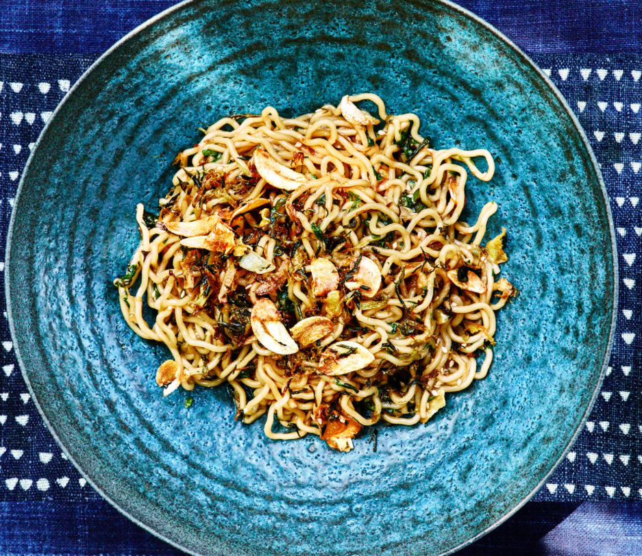

Ramen Noodles With Spring Onions and Garlic Crisp

Preparation time: 40 minutes
Ingredients
- 1 bunch spring onions or scallions, very thinly sliced, divided
- 1 3" piece ginger, peeled, thinly sliced
- 4 garlic cloves, thinly sliced
- ½ cup vegetable or sunflower oil
- ½ serrano or other green chile, thinly sliced (with seeds)
-
¼ cup finely chopped tender herbs (such as cilantro, mint, and/or basil)
- 2 Tbsp. low-sodium soy sauce
- 1 Tbsp. unseasoned rice vinegar
- 1 Tbsp. toasted sesame seeds
- 1 tsp. freshly ground black pepper
- ½ tsp. kosher salt
- ½ tsp. sugar
- 2 5-oz. packages fresh wavy ramen noodles
- 1 Tbsp. unsalted butter, cut into pieces
Instructions
-
Place half of spring onions in a large heatproof bowl and set a
fine-mesh sieve on top; set aside. Combine remaining spring onions with
ginger, garlic, and oil in a small saucepan. Set over medium-high and
cook, stirring occasionally, until garlic is golden and scallions are
beginning to crisp and turn golden brown, 8–10 minutes.
-
Pour mixture through reserved sieve onto spring onions. Turn out garlic
crisp in sieve onto paper towels to drain. Stir spring onions in bowl
until just softened, about 1 minute. Stir in chile, herbs, soy sauce,
vinegar, sesame seeds, pepper, salt, and sugar. Let dressing sit 10
minutes.
-
Meanwhile, cook noodles according to package directions. Drain and rinse
under warm water to get rid of any excess starch.
-
Transfer the chicken pieces to a baking tray lined with foil. Place the
chicken under the grill for 10 minutes or until golden. Slice the
chicken.
-
Transfer noodles to bowl with dressing and add butter and half of garlic
crisp; toss to coat noodles. Divide among bowls; top with remaining
garlic crisp.
Main Page